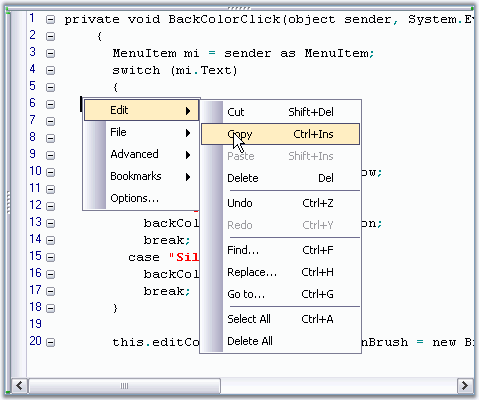
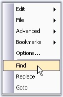

Edit Control has a built-in context menu which is enabled, by default. This context menu allows you to edit the contents, and open or create a new file. It includes some advanced features like indent selection, comment selection, adding bookmarks, and much more. This is enabled by using the EditControl1.ContextMenuManager.Enabled property.
The context menu has the standard VS.NET-like appearance, and can optionally be provided with the Office 2003 appearance.

Figure 53: Edit Control's Context Menu in Office2003 Style
Set the appearance of the context menu by specifying the desired ContextMenuProvider.
|
[C#]
// Show Office2003 style context menu. this.editControl1.ContextMenuManager.ContextMenuProvider = new Syncfusion.Windows.Forms.Tools.XPMenus.XPMenusProvider();
// Show Standard style context menu. this.editControl1.ContextMenuManager.ContextMenuProvider = new Syncfusion.Windows.Forms.StandardMenusProvider(); |
|
[VB.NET]
' Show Office2003 style context menu Me.editControl1.ContextMenuManager.ContextMenuProvider = New Syncfusion.Windows.Forms.Tools.XPMenus.XPMenusProvider()
' Show Standard style context menu Me.editControl1.ContextMenuManager.ContextMenuProvider = New Syncfusion.Windows.Forms.StandardMenusProvider() |
Adding Customized Menu Items
You can handle the MenuFill event to add Menu Items to the context menu. This is illustrated in the below code snippet.
|
[C#]
// Handle the MenuFill event which is called each time the context menu is displayed. this.editControl1.MenuFill += new EventHandler(cm_FillMenu);
private void cm_FillMenu(object sender, EventArgs e) { ContextMenuManager cm = (ContextMenuManager) sender;
// To clear default context menu items. cm.ClearMenu();
// Add a separator. cm.AddSeparator();
// Add custom context menu items and their Click eventhandlers. cm.AddMenuItem("&Find", new EventHandler(ShowFindDialog)); cm.AddMenuItem("&Replace", new EventHandler(ShowReplaceDialog)); cm.AddMenuItem("&Goto", new EventHandler(ShowGoToDialog));
// If you need to get access to the underlying menu provider you can access it using the below given code. Syncfusion.Windows.Forms.IContextMenuProvider contextMenuProvider = this.editControl1.ContextMenuManager.ContextMenuProvider; }
// Calling the in-built dialogs.
void ShowFindDialog(object sender, EventArgs e) { this.editControl1.ShowFindDialog(); }
void ShowReplaceDialog(object sender, EventArgs e) { this.editControl1.ShowReplaceDialog(); }
void ShowGoToDialog(object sender, EventArgs e) { this.editControl1.ShowGoToDialog(); } |
|
[VB.NET]
' Handle the MenuFill event which is called each time the context menu is displayed. AddHandler Me.editControl1.MenuFill, AddressOf cm_FillMenu
Private Sub cm_FillMenu(ByVal sender As Object, ByVal e As EventArgs) Dim cm As ContextMenuManager = CType(sender, ContextMenuManager)
' To clear default context menu items. cm.ClearMenu();
' Add a separator. cm.AddSeparator()
' Add custom context menu items and their Click eventhandlers. cm.AddMenuItem("&Find", New EventHandler(AddressOf ShowFindDialog)) cm.AddMenuItem("&Replace", New EventHandler(AddressOf ShowReplaceDialog)) cm.AddMenuItem("&Goto", New EventHandler(AddressOf ShowGoToDialog))
' If you need to get access to the underlying menu provider you can access it using the below given code. Dim contextMenuProvider As Syncfusion.Windows.Forms.IContextMenuProvider = Me.editControl1.ContextMenuManager.ContextMenuProvider End Sub 'cm_FillMenu
' Calling the in-built dialogs. Sub ShowFindDialog(ByVal sender As Object, ByVal e As EventArgs) Me.editControl1.FindDialog() End Sub
Sub ShowReplaceDialog(ByVal sender As Object, ByVal e As EventArgs) Me.editControl1.ReplaceDialog() End Sub
Sub ShowGoToDialog(ByVal sender As Object, ByVal e As EventArgs) Me.editControl1.GoToDialog() End Sub |

Figure 54: Customized Find, Replace and Goto Menu Items in Context Menu
Assembly Dependency
If the Syncfusion.Tools.Windows assembly is loaded before the instantiation of the context menu, then an XPMenus.PopupMenu is displayed as the context menu. Otherwise, a standard .NET context menu is shown.
 Note: You must have reference to the
Syncfusion.Tools.Windows assembly in your project.
Note: You must have reference to the
Syncfusion.Tools.Windows assembly in your project.
A sample demonstrating the Context Menu feature is available in the following sample installation path.
..\My Documents\Syncfusion\EssentialStudio\Version Number\Windows\Edit.Windows\Samples\2.0\Advanced Editor Functions\ContextMenuDemo